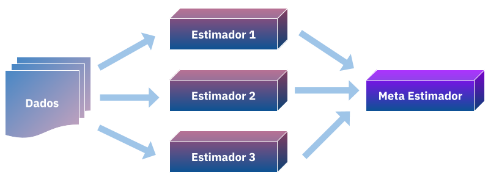

Stacked Generalization
Introduced by Wolpert in 19921, this generalization technique consists of combining nonlinear estimators to correct their biases to a given training set, adding their capabilities for better prediction2.

In a previous post I presented the linear combination of estimators, in it we adjusted N models to a D dataset and a priori we defined W weights for them by combining into one summation:
$$\sum_{i=1}^{N} w_{i}M_{i}$$
given a priori W = (w1, w2, ...wN) and∑W = 1
With this the weighted average of the predictions in general will be less biased for certain regions and may generalize more, but this method has two limitations, the weights cannot be changed after verifying the performance (if we would not be acting as a meta-estimator in test data) and is an extremely simple combination, not leveraging the strengths of the M estimators for certain regions.
Wolpert then proposes an alternative to this, what if we make W pesos a learning problem? or rather, not only learn how to combine our predictions but also combine them nonlinearly using a meta estimator?
Meta estimators are those who use base models to combine them or select them to improve on a performance metric, for example you reader when deciding between using a random forest or a logistic regression to predict your model you are being a meta estimator. But here the problem of generalization arises, if you continue to improve your regression or rforest you may end up overfitting the data and not being able to generalize, here then it is necessary to apply cross validation techniques to select the model, the same will happen for the stacking.
For stacking it is ideal that the dataset is relatively large, the author’s advice is at least one thousand records. We start our example by loading a relatively large dataset, 20,000 records, this dataset has as characteristic attributes of california houses and as a target value its price, the data is already normalized and we will not make any changes to it.
from sklearn.datasets import fetch_california_housing
from sklearn.model_selection import train_test_split
import pandas as pd
dataset = fetch_california_housing()
df = pd.DataFrame(data=dataset.data, columns=dataset.feature_names)
df['Price'] = dataset.target
df.head()| MedInc | HouseAge | AveRooms | AveBedrms | Population | AveOccup | Latitude | Longitude | Price | |
|---|---|---|---|---|---|---|---|---|---|
| 0 | 8.3252 | 41.0 | 6.984127 | 1.023810 | 322.0 | 2.555556 | 37.88 | -122.23 | 4.526 |
| 1 | 8.3014 | 21.0 | 6.238137 | 0.971880 | 2401.0 | 2.109842 | 37.86 | -122.22 | 3.585 |
| 2 | 7.2574 | 52.0 | 8.288136 | 1.073446 | 496.0 | 2.802260 | 37.85 | -122.24 | 3.521 |
| 3 | 5.6431 | 52.0 | 5.817352 | 1.073059 | 558.0 | 2.547945 | 37.85 | -122.25 | 3.413 |
| 4 | 3.8462 | 52.0 | 6.281853 | 1.081081 | 565.0 | 2.181467 | 37.85 | -122.25 | 3.422 |
Here we separate into training and testing in a (pseudo) random way to finally evaluate performance.
xtrain, xtest, ytrain, ytest =\
train_test_split(df.drop('Price', axis=1), df.Price, test_size=.3,
random_state=42)
xtrain.head()| MedInc | HouseAge | AveRooms | AveBedrms | Population | AveOccup | Latitude | Longitude | |
|---|---|---|---|---|---|---|---|---|
| 7061 | 4.1312 | 35.0 | 5.882353 | 0.975490 | 1218.0 | 2.985294 | 33.93 | -118.02 |
| 14689 | 2.8631 | 20.0 | 4.401210 | 1.076613 | 999.0 | 2.014113 | 32.79 | -117.09 |
| 17323 | 4.2026 | 24.0 | 5.617544 | 0.989474 | 731.0 | 2.564912 | 34.59 | -120.14 |
| 10056 | 3.1094 | 14.0 | 5.869565 | 1.094203 | 302.0 | 2.188406 | 39.26 | -121.00 |
| 15750 | 3.3068 | 52.0 | 4.801205 | 1.066265 | 1526.0 | 2.298193 | 37.77 | -122.45 |
We now load cross-validation specifically into KFold so that we don’t “lose” a lot of data, and the templates that will be used , here there is no rule of thumb about the base models, it is up to you, but for the meta-estimator is usually applied boosting trees. Here I arbitrarily chose kNN and ElasticNet, but as a meta-estimator I will use xgboost.
from sklearn.linear_model import ElasticNet
from sklearn.neighbors import KNeighborsRegressor
from sklearn.model_selection import KFold
from xgboost import XGBRFRegressor
en = ElasticNet()
knn = KNeighborsRegressor()
# we will early stop to not overfit
gbm = XGBRFRegressor(n_jobs=-1, objective='reg:squarederror')Now the creation of the stacked attributes begins, to make sure that there are no biases and we don’t have little data to train the meta-estimator we create them by kfolds, being generated the training and test subsets, we train the model in the training set and we predict the value for the test set as follows:
kf = KFold(20, shuffle=True)
xtrain['en'] = 0
for train_index, test_index in kf.split(xtrain):
en.fit(xtrain.iloc[train_index, :-1], ytrain.iloc[train_index])
xtrain.iloc[test_index,8] = en.predict(xtrain.iloc[test_index, :-1])We do the same for the other model.
kf = KFold(20, shuffle=True)
xtrain['knn'] = 0
for train_index, test_index in kf.split(xtrain):
knn.fit(xtrain.iloc[train_index, :-2], ytrain.iloc[train_index])
xtrain.iloc[test_index,9] = knn.predict(xtrain.iloc[test_index, :-2])
xtrain.head()| MedInc | HouseAge | AveRooms | AveBedrms | Population | AveOccup | Latitude | Longitude | en | knn | |
|---|---|---|---|---|---|---|---|---|---|---|
| 7061 | 4.1312 | 35.0 | 5.882353 | 0.975490 | 1218.0 | 2.985294 | 33.93 | -118.02 | 2.208931 | 2.108000 |
| 14689 | 2.8631 | 20.0 | 4.401210 | 1.076613 | 999.0 | 2.014113 | 32.79 | -117.09 | 1.705684 | 1.809200 |
| 17323 | 4.2026 | 24.0 | 5.617544 | 0.989474 | 731.0 | 2.564912 | 34.59 | -120.14 | 2.098392 | 1.683200 |
| 10056 | 3.1094 | 14.0 | 5.869565 | 1.094203 | 302.0 | 2.188406 | 39.26 | -121.00 | 1.694140 | 1.792000 |
| 15750 | 3.3068 | 52.0 | 4.801205 | 1.066265 | 1526.0 | 2.298193 | 37.77 | -122.45 | 2.194403 | 2.388002 |
Now that we have created the features let’s evaluate the models in the raw data without the stacked features to check their performances:
from sklearn.metrics import mean_squared_error
en.fit(xtrain.iloc[:,:-2], ytrain)
ypred_en = en.predict(xtest)
print(mean_squared_error(ytest, ypred_en))
knn.fit(xtrain.iloc[:,:-2], ytrain)
ypred_knn = knn.predict(xtest)
print(mean_squared_error(ytest, ypred_knn))0.7562926012142382 1.136942049088978
Now we create the features with the trained models for the test data:
| MedInc | HouseAge | AveRooms | AveBedrms | Population | AveOccup | Latitude | Longitude | en | knn | |
|---|---|---|---|---|---|---|---|---|---|---|
| 20046 | 1.6812 | 25.0 | 4.192201 | 1.022284 | 1392.0 | 3.877437 | 36.06 | -119.01 | 1.470084 | 1.6230 |
| 3024 | 2.5313 | 30.0 | 5.039384 | 1.193493 | 1565.0 | 2.679795 | 35.14 | -119.46 | 1.744788 | 1.0822 |
| 15663 | 3.4801 | 52.0 | 3.977155 | 1.185877 | 1310.0 | 1.360332 | 37.80 | -122.44 | 2.233643 | 2.8924 |
| 20484 | 5.7376 | 17.0 | 6.163636 | 1.020202 | 1705.0 | 3.444444 | 34.28 | -118.72 | 2.413336 | 2.2456 |
| 9814 | 3.7250 | 34.0 | 5.492991 | 1.028037 | 1063.0 | 2.483645 | 36.62 | -121.93 | 2.088660 | 1.6690 |
With the stacked attributes in hand now we train two models, one without using them, for comparison and another using, let’s compare the results:
#Without stacked features
gbm.fit(xtrain.iloc[:,:-2], ytrain.values,
eval_set=[(xtest.iloc[:,:-2],ytest.values)],
early_stopping_rounds=20,
verbose=False)
ypred = gbm.predict(xtest.iloc[:,:-2])
print("Without stacked features", mean_squared_error(ytest, ypred))
# With stacked features
gbm.fit(xtrain, ytrain.values,
eval_set=[(xtest,ytest.values)],
early_stopping_rounds=20,
verbose=False)
ypred = gbm.predict(xtest)
print("With stacked features", mean_squared_error(ytest, ypred))Without stacked features 0.5828429815199971 With stacked features 0.5359477372727965
We’ve had a significant improvement using “stacked” attributes, concluding our meta estimator learns the best way to combine the features of other estimators, learning their generalization errors and how to correct them, ensuring a much better generalization.